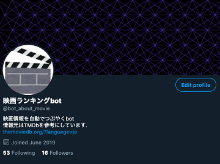
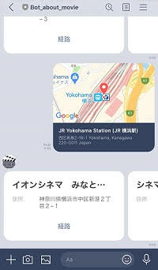
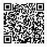

プロダクト

映画情報自動ツイートbot
映画ランキングbot

人気映画ランキング１位から21位までを１週間かけて自動でツイートするBot.
ツイートしてくれる情報は以下の通り.
- ランキング
- 映画タイトル
- 人気度
- 平均評価 (x/100)
- 評価信頼性
- 映画ポスター
TMDb APIのGet Trendingメソッドと, Twitter REST APIを利用している.
サーバにRaspberry Piを使用し, Cronを用いてPythonプログラムを自動で実行している.
日本時間の12時/15時/18時のランダムな分でツイート.
評価信頼性は収集した全評価数の4分位を計算している.
第一四分位数までなら「極低」, 中央値までなら「低」,
第三四分位数までなら「高」, それ以上なら「極高」としている.
周辺の映画館を教えてくれるLINE bot
LINE bot about movie
 
LINEの位置情報を送信することによって, その周辺3km以内にある映画館を表示してくれるbot.
LINEのMessaging APIとYahoo!のローカルサーチAPIを利用している.
現在は, 位置情報からのリクエストにしか対応できていないが,
将来的には周囲の探索範囲の設定, 最近の映画や感情の入力によって合いそうな映画を紹介するといった機能を実現することを考えている.
その他